Hamilton, MT · Curb Appeal / Full Exterior Remodel
This one started as a plain, worn-out 1940s cottage with a low roofline and no real curb appeal. The scope grew into a full exterior remodel: the old roof came off entirely so we could reframe it with new dormers, then it was resheathed, wrapped, insulated with a continuous layer of rigid foam board, and finished in stucco with dark trim throughout.
We also reframed and rebuilt the front porch as part of the same remodel, adding new columns and roof framing so the entry matches the rest of the house. It's the same kind of exterior transformation we bring to any dated home that needs a real curb-appeal upgrade — not just new paint, but a rebuilt building envelope underneath it.
Curious about the chimney at this same house? See the Masonry & Concrete rebuild.
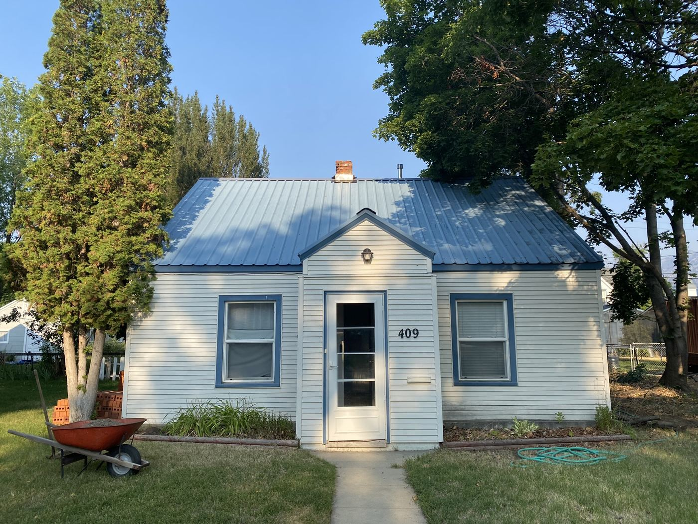
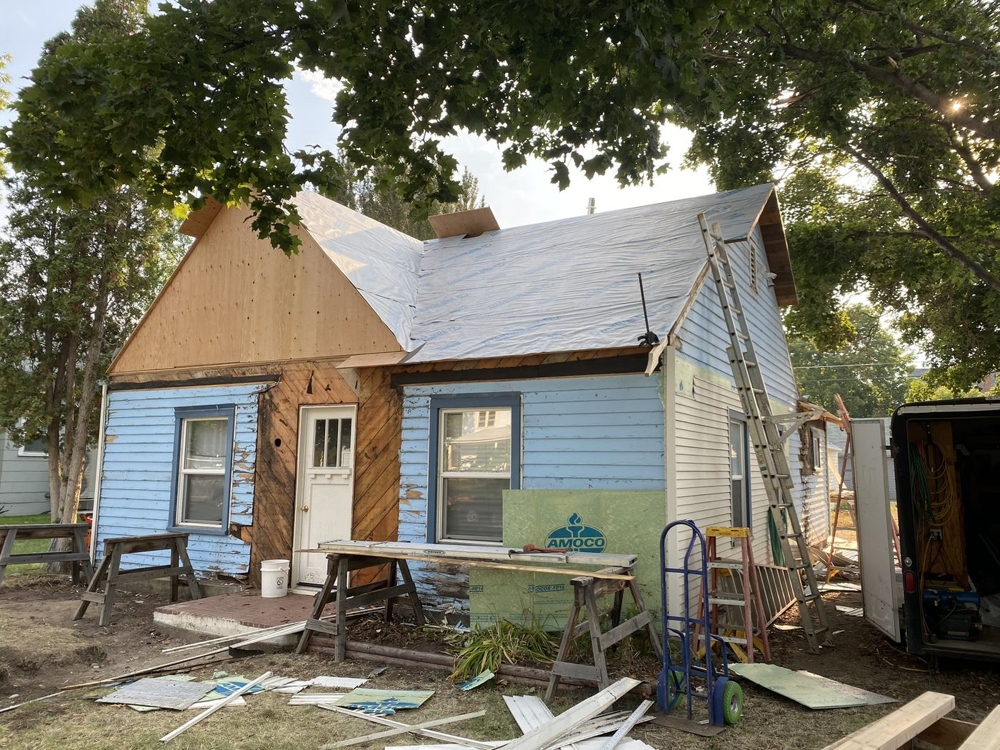
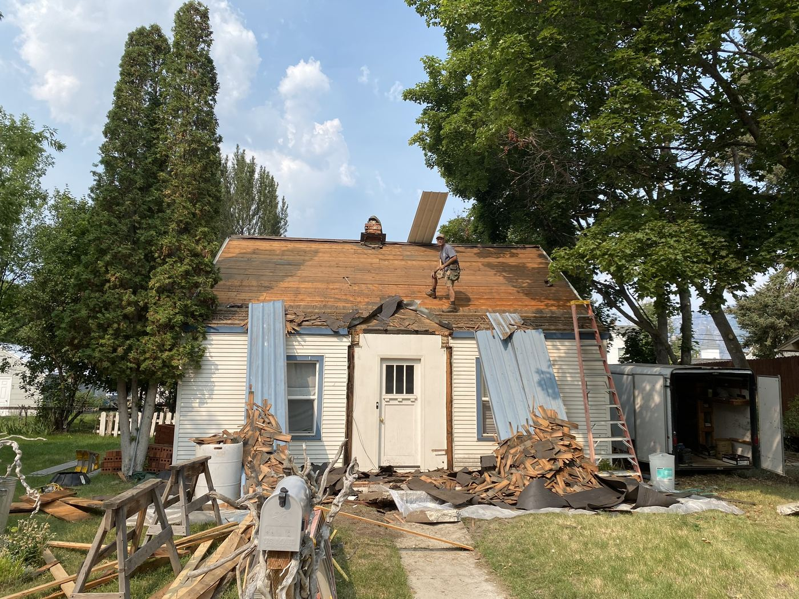
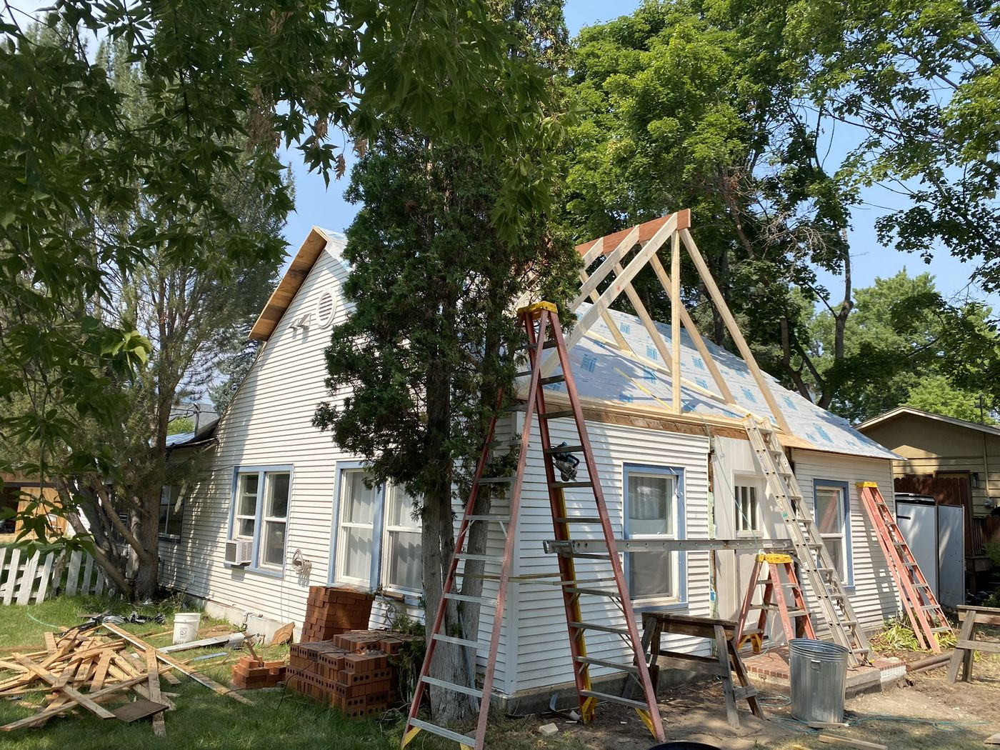
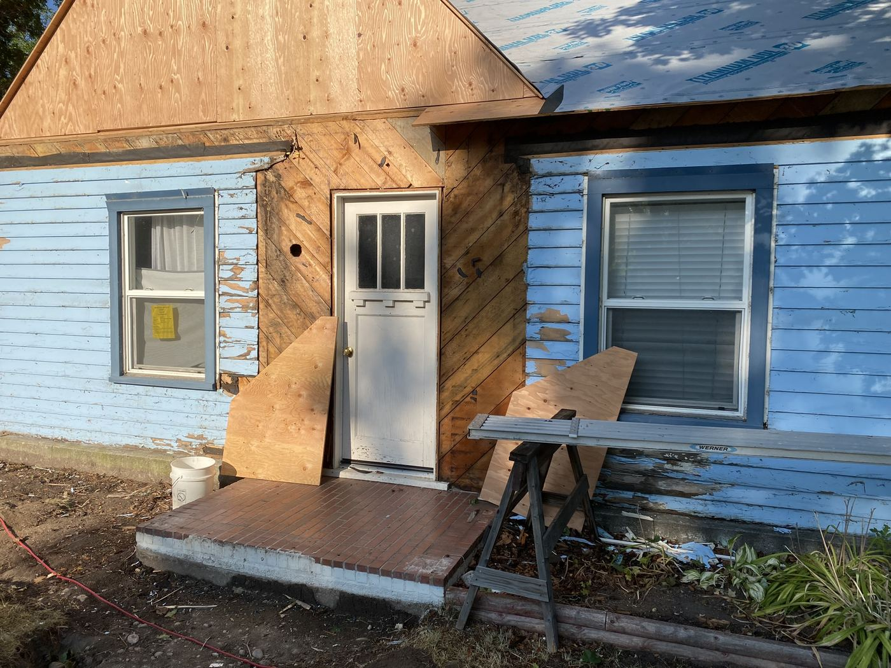
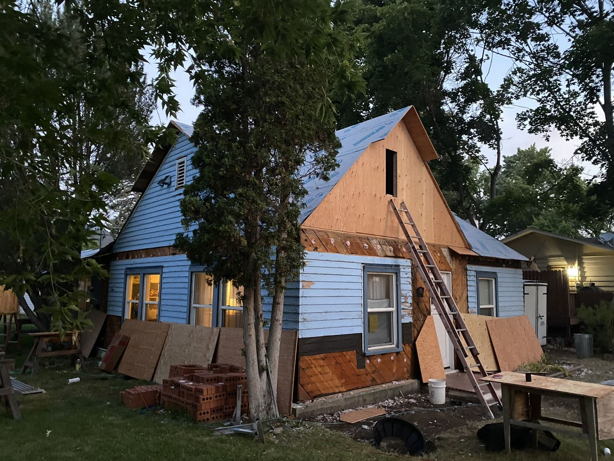
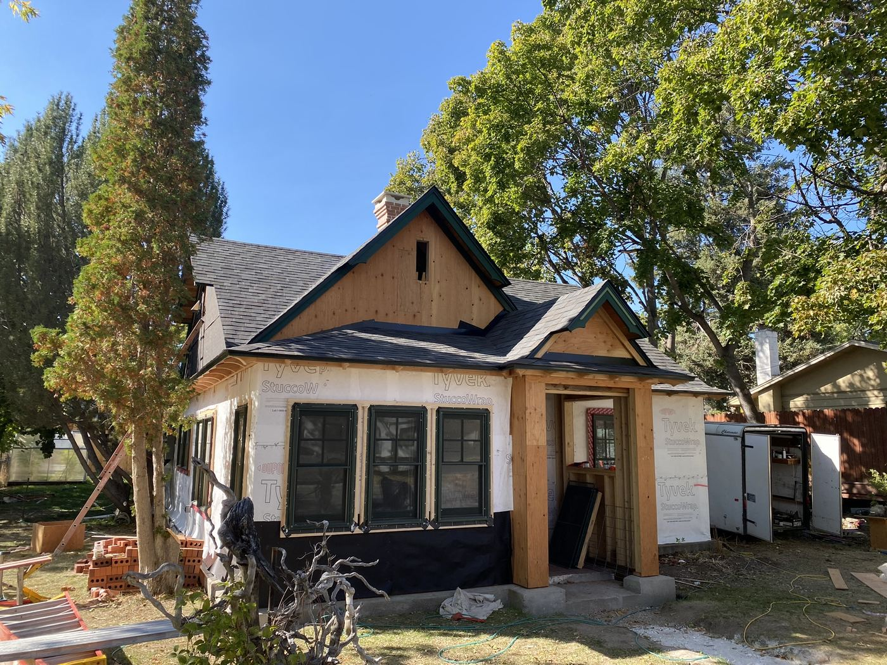
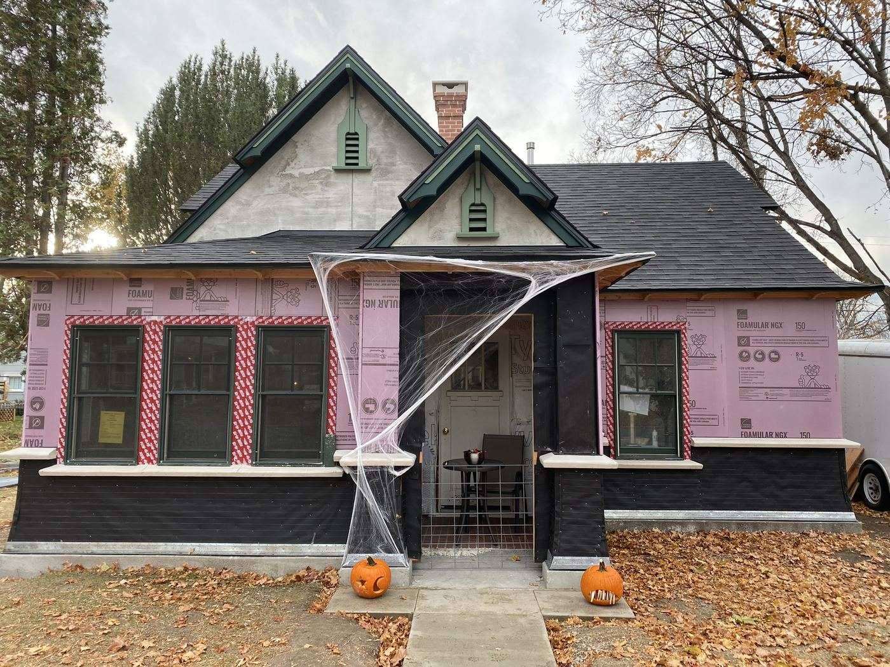
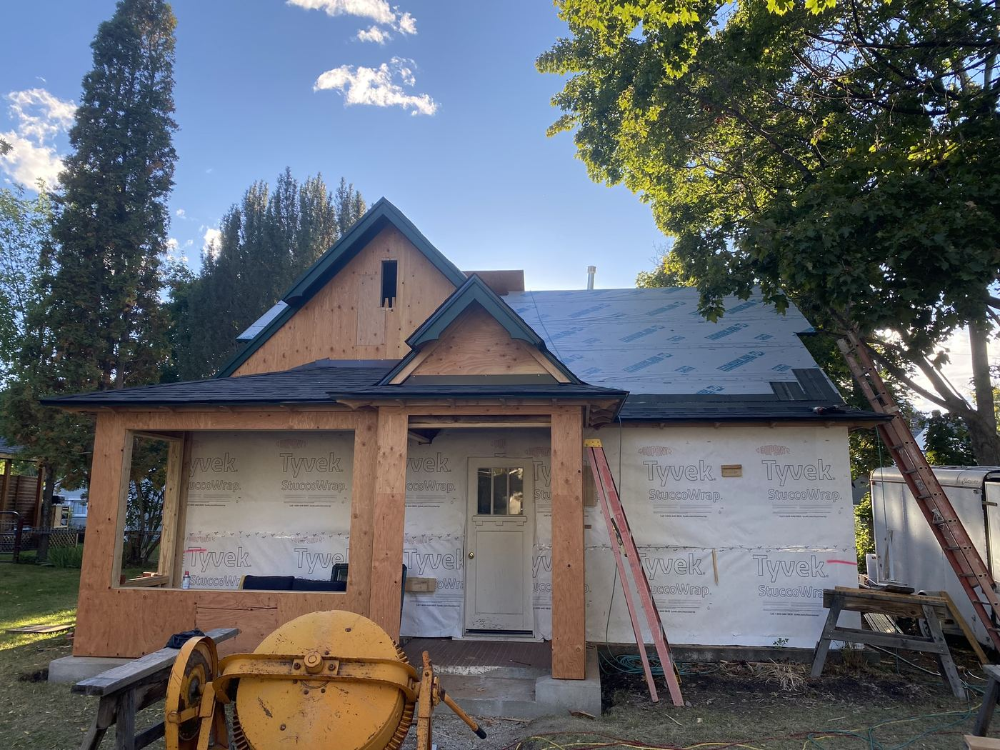
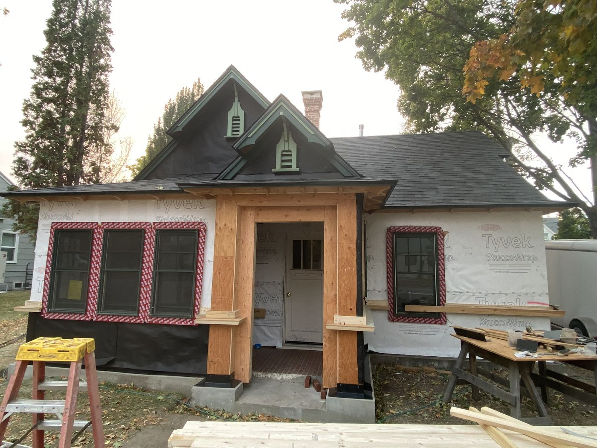
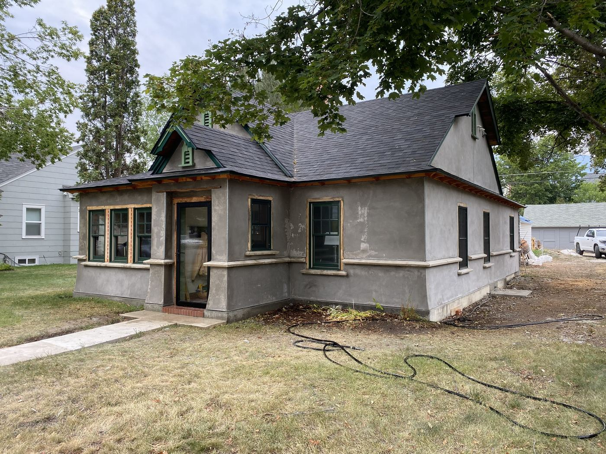

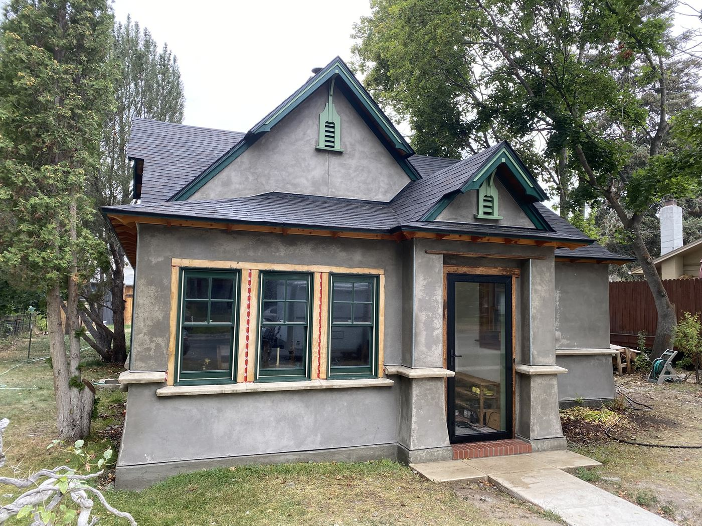
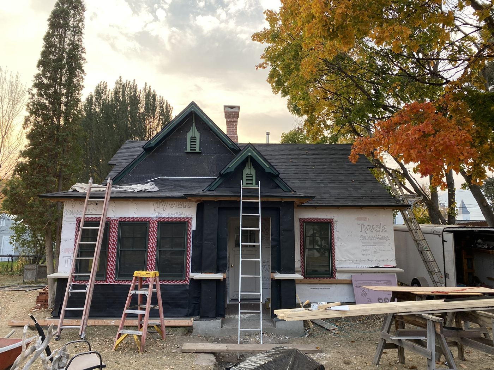